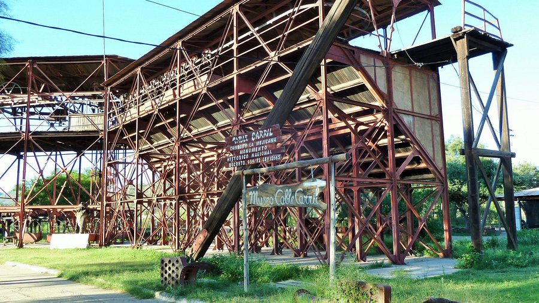
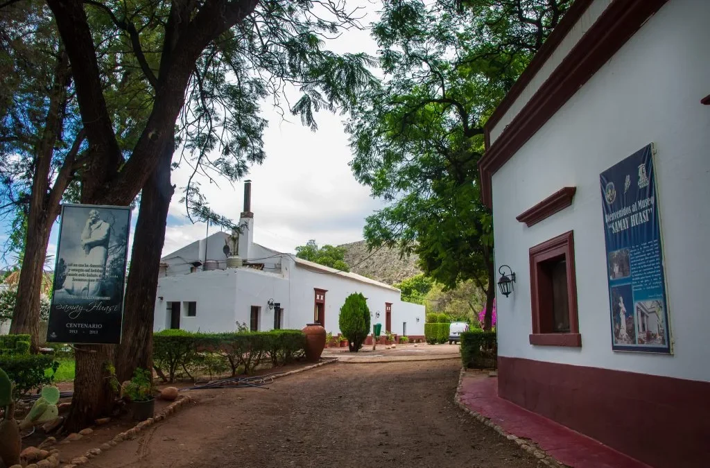
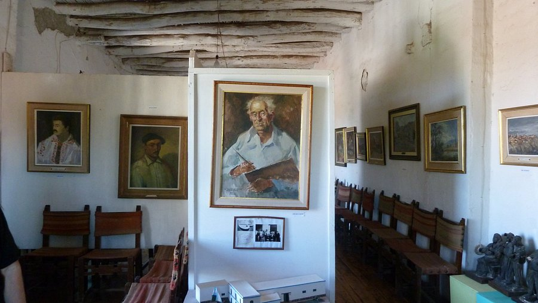

Chilecito alberga museos que cuentan su rica historia minera, colonial y cultural, con piezas únicas y visitas guiadas.

En la Estación 1. Cuenta la historia de la obra de ingeniería más increíble del país y la época dorada de la minería.

Finca de Joaquín V. González (2 km del centro). Ciencias naturales, mineralogía, arqueología y pinacoteca Antonio Alice.

Edificio del siglo XVIII. Historia colonial, arqueología y la vida cotidiana de la época.
Otros: Museo de la Ciudad y Museo de Arte Sacro, con visitas gratuitas o a bajo costo.